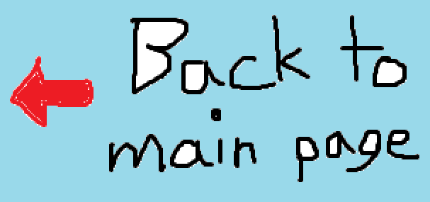
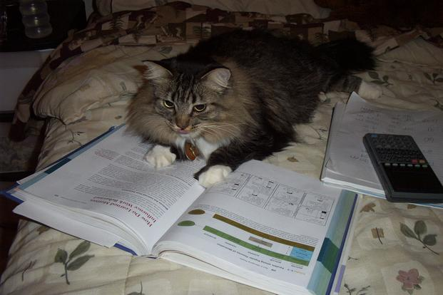
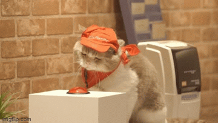
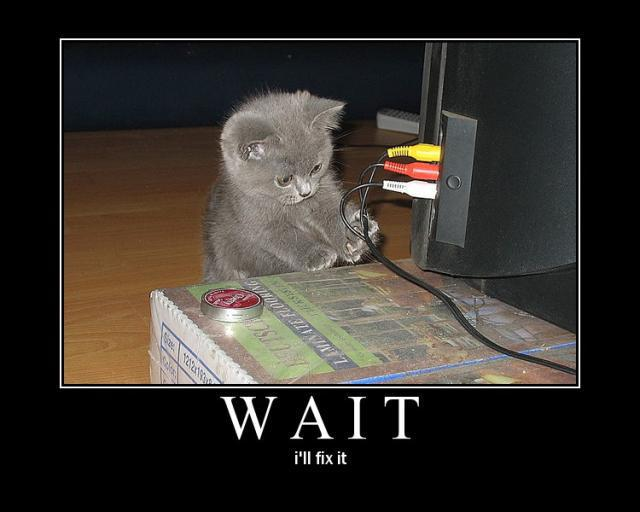
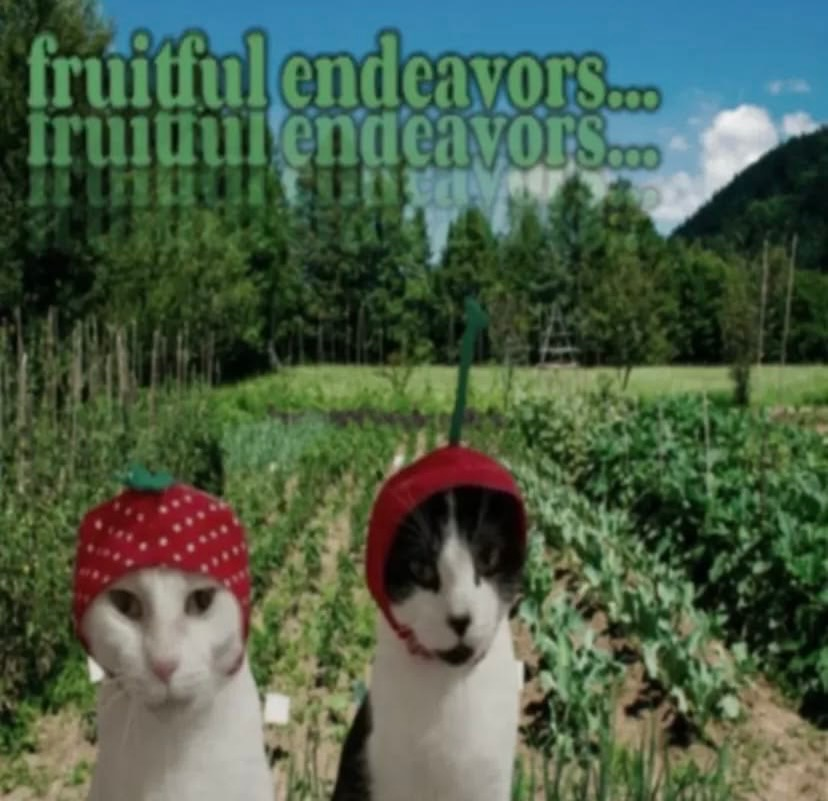

Achievements!! - 22 November, 2026

Sorry to keep you waiting!
It's a bit hard to remember what even happened at this point, but if I remember right, I took a bit of a break after the previous update, and then I got a lot of work done on this one, but it was right before my college classes were starting back up. I got like 90% done with the update, but then I got busy with schoolwork and completely forgot about it for a while,,,
But! After taking literally just a week or so to finish it up, it's ready!
Astute users may have noticed a peculiar gap in the top-right box on the main page; that gap has now been filled with a link to the achievements page!
I've put some achievements into every game on the site (except Connect 4*) as well as a couple miscellaneous achievements (one of which you can get by clicking on this parenthetical!).
I'm pretty proud of the pixel art I did for the achievement icons; I think I'm actually getting quite decent. And, for the record, the lock icon was supposed to be placeholder art. I kept it because it charmed me.
From this point forward, each game I make is gonna have achievements built-in, so stay up-to-date if you want 100% completion!
Speaking of which, I NEED TO MAKE MORE GAMES!! I think it has genuinely been multiple years since I've made a complete game (The Button doesn't count). I've done a bunch of redesigning and adding new features, but the core of the site has been stagnant for so long!
I have three games from ages ago that are partway complete, and they do seem like pretty good ideas, but I'm not sure if the end-product is gonna be any good. It's probably worth trying to finish them even if it ends up bad, though.
I've also been itching to make a 3-D engine, but I don't really have any ideas for what I'd make with it. A voxel sandbox game comes to mind, but that seems a bit overdone at this point.
Recently I've been getting into Mega Man, so I'd also like to make a game like that.
Lastly, I want to expand the software section of the site. I almost want to try remaking JabiChat again (for the fourth time, I think), but I know that's gonna be far too big of an undertaking. It would be cool to make a program that's a carbon-copy of MS Paint that works on Linux, because that's one of the few things still stopping me from making the switch.
Whatever it ends up being, I definitely wanna add more stuff to the site soon.
Mobile Patch - 6 July, 2026

It's been about two weeks since the last update, and all I've managed to finish working on in that time is one single button.
It's a really good button, though.
This update adds something for the mobile users! I recognize that most people initially view the website on their phone, despite basically nothing on it being designed for phones, so I wanted something to appease them, while still directing them to a computer, whereupon the site actually works.
My solution to this, of couse, was giving them a button.
( This is the part where you go take a look at the button! ) ( If you don't wanna grab your phone, you can make your browser window very thin and refresh the main site page. )
I know it's simple but I really like how this turned out. I think I timed things pretty well to how players might act, and I'm hoping it has the effect I'm imagining; I think it's a funny bit.
I'm also really really proud of my pixel art for the button! Again, it's obviously rather simple, but I think it looks perfect; I was very suprised to see that I could get it to look so right.
Anyway, now that I'm satisfied with the site's presence on phones, I'll finally get around to working on the big new feature. Soon.
Obviously, it doesn't really take two weeks to make that simple button; I've been having a pretty hard time actually getting myself to work on stuff recently.
I'm really excited for when I do get the feature out, though. It's gonna be really cool!
Reformat Patch - 23 June, 2026

Last week's update was really unfinished, and the more I looked at it, the more stuff I realized just did not work properly. Whoops!
I was really rushing to get the site out on time (because I completely procrastinated everything), but I've since fixed all the issues I could find and finished the stuff I meant to have ready. Except the big thing; that's gonna take a little while.
It really shouldn't've taken a week to do this, but I procrastinated again. Classic.
Anyway, I'm pretty happy with the site's current state, and I have some fun plans for stuff to work on soon, which is very nice. Hope you enjoy it as much as I do!
Fourth Jabiveir Day! - 17 June, 2026

Welcome to,,,, my awesome blog,,,, And happy Jabiveir Day!
Today marks 4 years since the release of Jabiveir Quest and the website as a whole.
I've been a bit dissatisfied with the lack of work I've been putting into the site, so I intend to do a lot more over this summer!
I intended to have a really cool feature added along with this site reformat, but I procrastinated too much and now I wouldn't be able to get it out in time for Jabiveir Day. Perhaps this does not bode well for future plans. Irregardless, I'm gonna try to make it and push it to the site soon.
In addition to that, I've also gotten an itch to remake JabiChat from the ground up (again), this time with better security and a simpler foundation, which I might do, but it would take a while to finish. I've also got a few cool half-baked game and software ideas that would be fun to work on.
Also, as you may be able to tell, I've remade the blog!
As I was reformatting the main site, I wanted it to be more silly and casual, reminiscent of old personal websites, but I got carried away and accidentally made it look good. Naturally, I decided to compensate on the blog page.
I believe this is the third time I've tried doing a site blog (and hopefully won't be the third time I've failed), but I think the problem before was that I was always trying to keep it frequent and consistent, which I couldn't keep up with. So, instead, this time I will basically only be posting here for big releases and updates, of which there will hopefully be some.
I've also decided to forego the RSS this time around, since it seemed like no one was using it. If you'd like me to add that back, e-mail me at jabiveir2@gmail.com or, more likely, contact me however you know me personally.